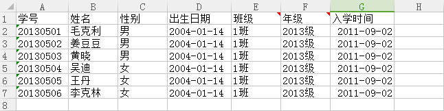

导入说明
一、在“导入模板”中下载excel表格；
二、在excel表格中添加学生基本信息，请参照以下格式进行整理学生信息：
注意：
1.添加的学号，不能重复；
2.性别只能填写“男”或者“女”；
3.出生日期必须是yyyy-mm-dd格式；
4.“班级名称”、“年级名称”必须与“机构创建”中已建好的信息相吻合；
温馨提示：请严格按照数据导入格式要求整理数据，否则会造成导入失败。
三、点击导入预览，认真核对预览中的数据与创建的excel表格中需导入的数据是否一致；核对预览中的年级、班级等信息是否在“机构创建”中已经创建完成。
四、点击导入，显示“导入成功”；如若显示“导入失败”，请按照导入说明要求的数据整理格式核对所创建的excel表。